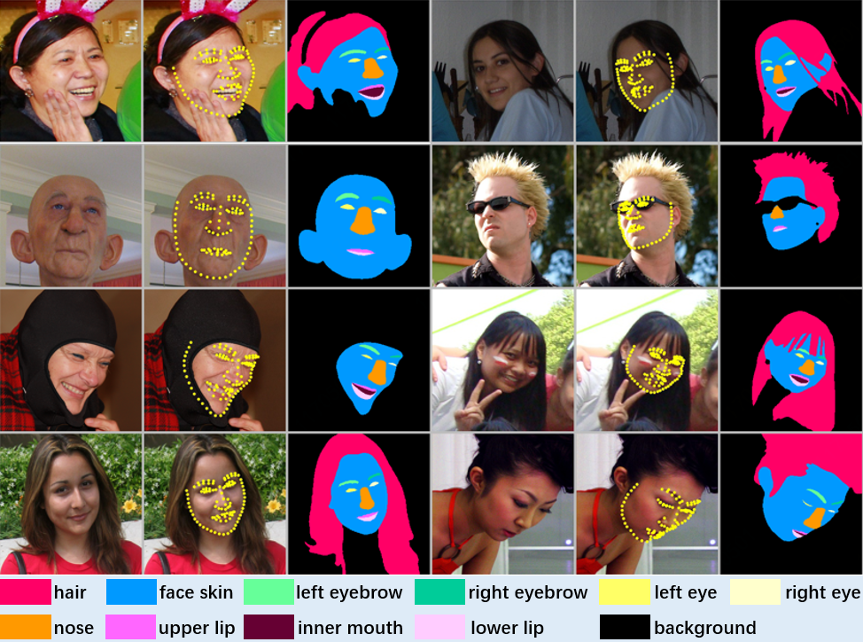

Segmentation · Image editing
Hair Segmentation & Sharpening
Predict a hair mask and increase sharpness only within the selected region.

What you’ll build
Adapt a segmentation decoder to hair, then apply masked unsharp enhancement: image + α × (image − blurred image).
Model and adaptation
SAM 1 ViT-B with a trainable mask decoder; frozen image and prompt encoders, using a full-image box.
SAM supplies pretrained segmentation features, but hair semantics must be learned for this task. The executable course baseline uses SAM 1; SAM 2/2.1 is a separate extension requiring implementation and measurement.
Data
Training
LaPa portraits and semantic hair labels; use verified identity groups where available and document the split protocol.
Evaluation
Held-out portrait images and masks, with separate inspection of fine hair boundaries and the final sharpened output.
How to measure success
- IoU ↑
- Overlap between the predicted and reference hair regions.
- Dice / F1 ↑
- Balance of missed hair pixels and false positives.
- Boundary F1 ↑
- Accuracy near hair contours under a stated pixel tolerance.
- Precision / Recall ↑
- Leakage into the background versus missing parts of the hair.
What to submit
- A trained hair-mask decoder and inference pipeline.
- Portrait, predicted mask and selectively sharpened result examples.
- A segmentation report and boundary error analysis.
- A comparison of enhancement strengths and visible artifacts.